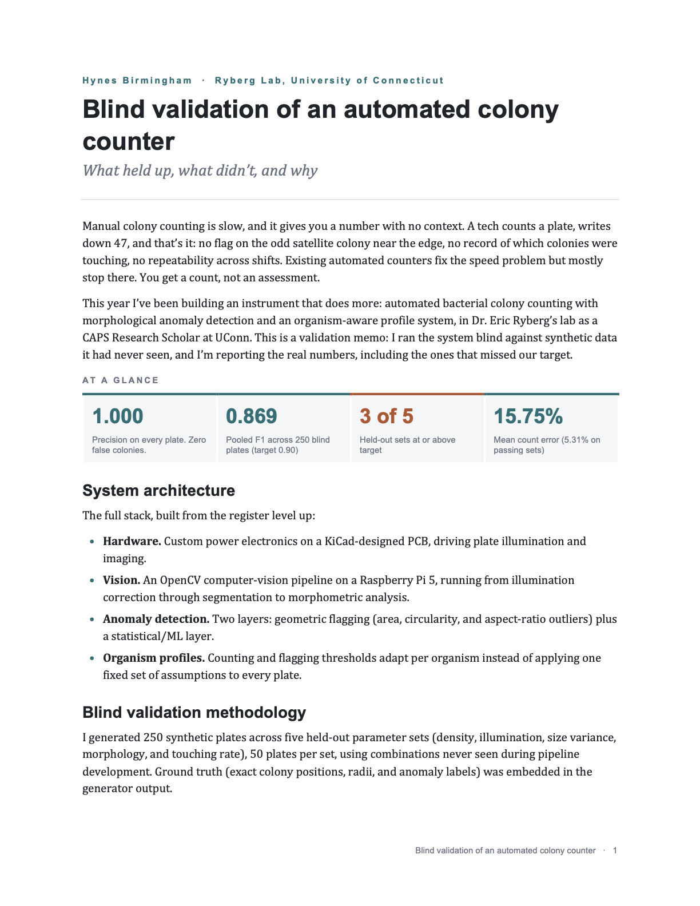
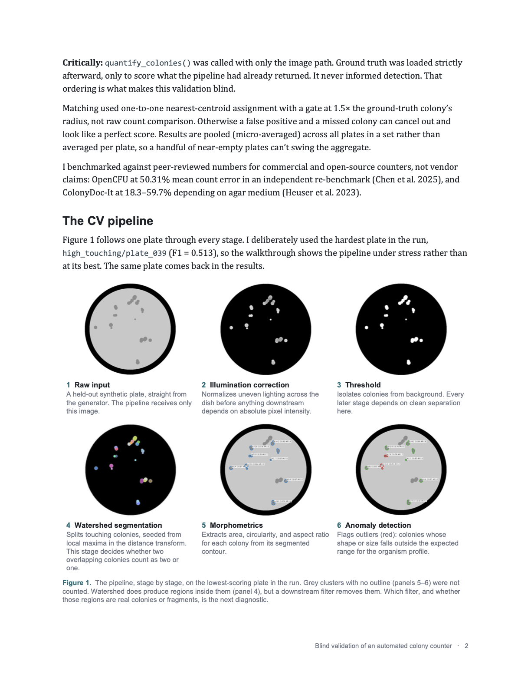
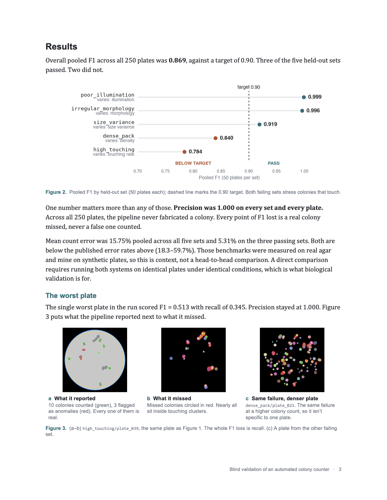
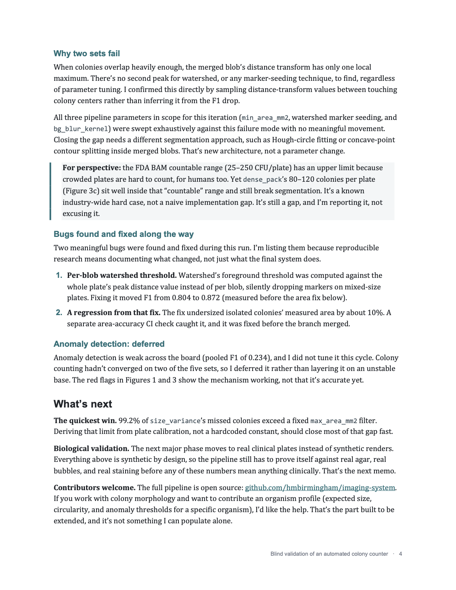

Blind Validation · Ryberg Lab, UConn
The system run blind against 250 held-out synthetic plates it had never seen, with ground truth scored only after detection returned. Pooled F1 0.869 (target 0.90), precision 1.000 on every plate, and a 15.75% mean count error, including the two sets that missed target and why.




Full pipeline is open source at github.com/hmbirmingham/imaging-system. See the interactive walkthrough on the Colony Counter project page.